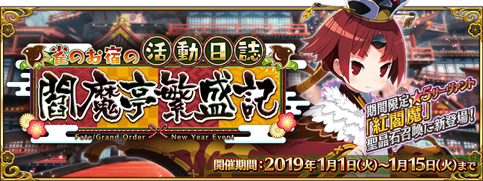

-
- ★☆★
- 本站與Mooncell合作共享資料，引用本站的翻譯請註明本站名稱或網址
本站不像其他網站可以分工合作統整資料
而是獨自一人憑藉熱忱製作分享
引用本站的翻譯請註明本站名稱或網址
-
- ★☆★
- 本週日版御主任務(10/5～10/11)
任務 獎勵 No.1：通過所有本週的御主任務 3No.2：擊倒任15名『Saber』『Archer』『Berserker』職階的敵人(從者及一部份Boss除外) 3No.3：擊倒任15名『Lancer』『Caster』職階的敵人(從者及一部份Boss除外) 3No.4：擊倒任15名『Rider』『Assassin』職階的敵人(從者及一部份Boss除外) 3No.5：擊倒5名持有『超巨大』特性的敵人 3No.6：靠戰利品獲得任15張「睿智的猛火」「睿智的大火」「睿智的燈火」「睿智的種火」 3No.7：靠戰利品獲得任30張「睿智的猛火」「睿智的大火」「睿智的燈火」「睿智的種火」 3
- ★☆★
- 【重要】Ver.1.11.0以後，關於從推薦環境以外的遊玩
-
- ★☆★
- 繁中(雀之旅社活動日誌)/簡中(BATTLE IN NEWYORK)活動資訊頁面
測試頁面，不保證其後之維護
可在過去活動翻譯公告的活動概要區找到右側圖示連結到已建立的活動資訊頁面
 


- 10/7
- 關於10月9日(五)「Fate/Grand Order 迦勒底放送局 輕量版」的播送
- 6/24
- 【來自迦勒底廣報局】關於6月的遊戲更新
- 10/9
- 期間限定活動「超古代新選組列傳 GUDAGUDA邪馬台國2020」


◆從者◆
・新增從者


◆概念禮裝◆
◆指令紋章◆
- 9/18
- 期間限定活動「影之國的舞鬥會 ～貓咪與兔子與聖杯戰爭～」


| ・關於能用10月交換券(2020)交換的道具 | |||
| ・9/18維修公告(12:00實施) | ・10/2遊戲更新(17:00實施) | ||
◆從者◆
・新增技能解放


◆概念禮裝◆
◆指令紋章◆
◆活動相關◆
- 9/7
- 「2100萬DL突破宣傳活動」


◆從者◆
・新增技能解放


・新增寶具解放

・新增寶具解放
|
|